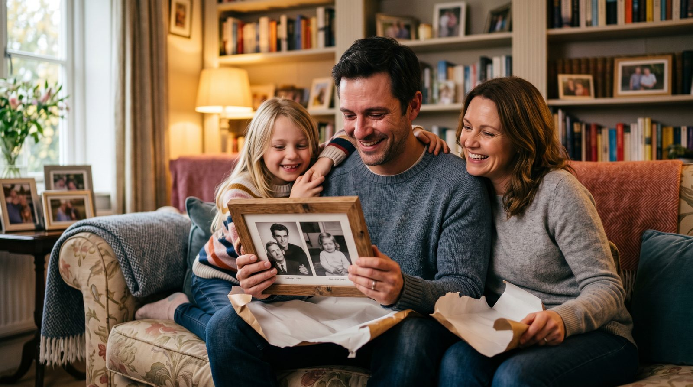

День отца — особенный праздник, когда хочется удивить и порадовать самого важного мужчину в вашей жизни. Почему бы не сделать это с помощью ожившего старого фото?
Каждый отец хранит в памяти множество моментов, которые ему дороги. Один из лучших способов выразить свою любовь и благодарность — подарить нечто уникальное и личное, например, ожившее фото из семейного архива. Такой подарок не только вызовет ностальгию, но и станет предметом гордости, который он сможет показать друзьям и близким.
Оживление фотографии позволяет вернуть к жизни те моменты, которые могли быть забыты. Это может быть фотография с его молодости, момент рождения ребенка или памятное событие, которое имело важное значение для всей семьи. Узнайте, как оживить старое фото и удивите своего папу.
Первоочередное правило при выборе фото — это его эмоциональная значимость. Лучше всего подходят фотографии, где отец изображен в анфас, с четкими чертами лица. Желательно использовать снимки с хорошей резкостью, чтобы нейросеть смогла качественно оживить изображение.
Если фото старое или поврежденное, не отчаивайтесь. Современные технологии позволяют улучшить изображение, восстановив утраченную четкость. Оживите фото дедушки или бабушки, и подарите папе возможность снова увидеть их улыбки.
Процесс оживления фото прост и не требует регистрации. Перейдите на сайт botisk.ru, загрузите выбранное фото и следуйте подсказкам для выбора движения. Примерно за 60 секунд вы получите готовое видео. Первое видео бесплатно, а дальнейшие — от 290 рублей за 10 видео.
Простота использования и отсутствие необходимости в подписке делают VideoAI доступным для всех. Вы можете сразу создать видео и порадовать своего папу уникальным подарком.
| Способ | Время | Цена | Результат |
|---|---|---|---|
| VideoAI | ~60 секунд | от 290р за 10 видео | Отличный, реалистичный |
| Студия | 1-2 недели | от 5000р | Высокого качества |
| Фрилансер | 3-5 дней | от 1000р | Разное качество |
| Зарубежные сервисы | от 5 минут | от $10 | Разное качество |
Без регистрации. Первое видео — бесплатно. Загрузите снимок — получите живое видео за 60 секунд.
Создать видео из фото →Да, с помощью современных технологий возможно восстановление и оживление даже старых и поврежденных фотографий.
Процесс создания видео занимает около 60 секунд, что позволяет быстро получить готовый результат.
Первое видео создается бесплатно. Дальнейшее использование стоит от 290 рублей за 10 видео.